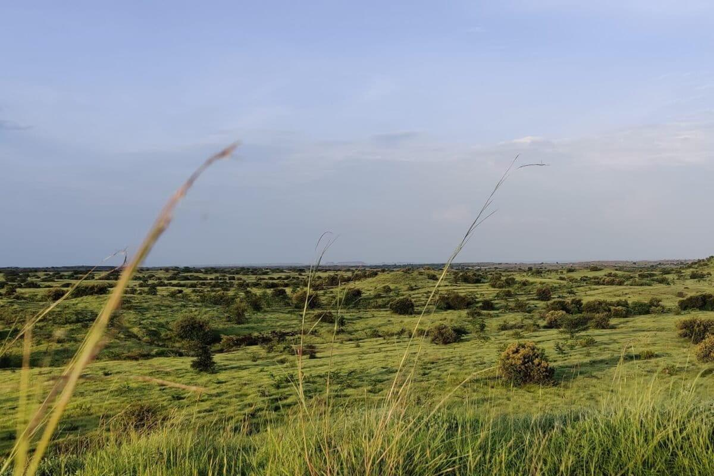
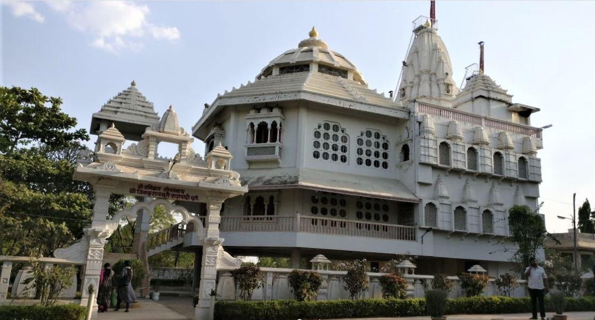
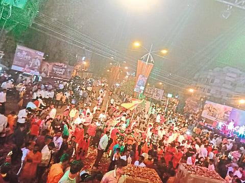
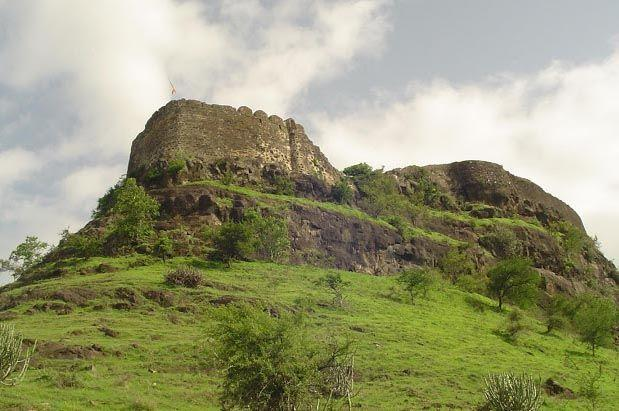
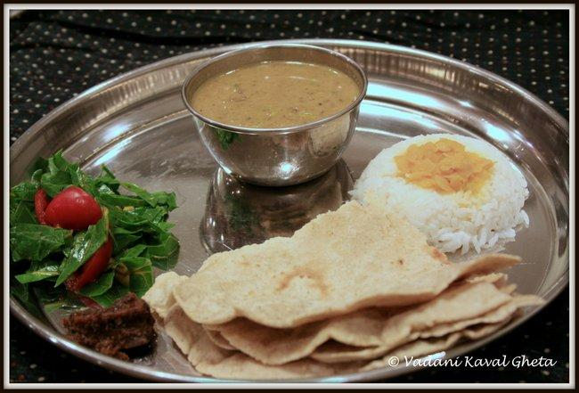
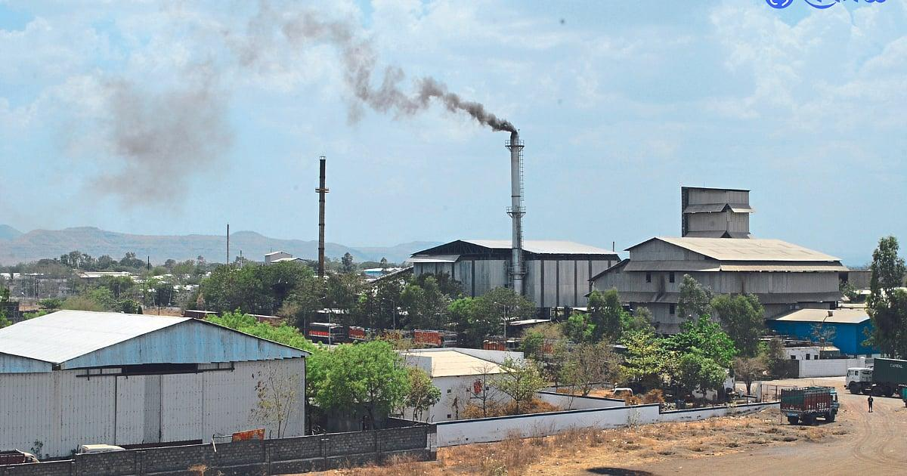
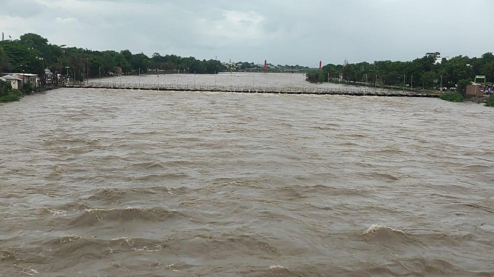
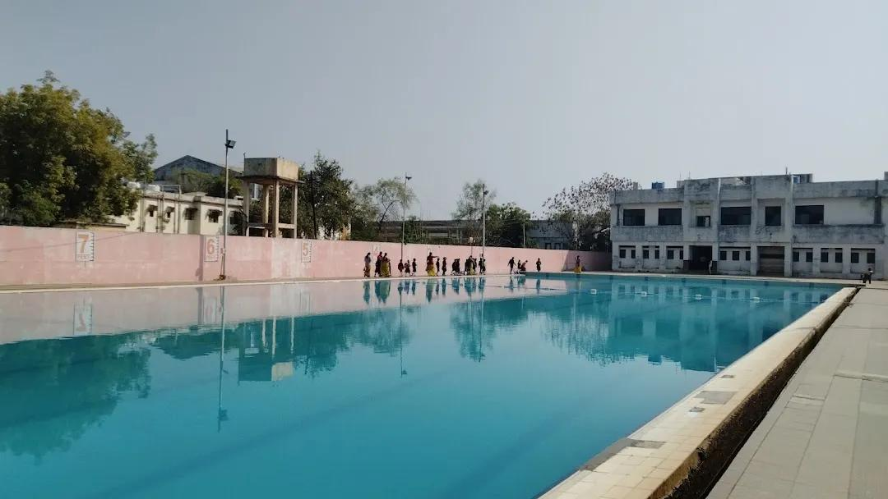

About

Dhule is a historically and culturally rich city in northwestern Maharashtra. Nestled at the foothills of the Satpuda and Sahyadri ranges, it serves as a major agricultural and industrial hub. It lies strategically at the junction of several national highways and is part of the Delhi-Mumbai Industrial Corridor Project.
- Location: On the Panzara River, about 325 km northeast of Mumbai. It sits where major national highways (NH 52, NH 53, NH 60) meet.
- Famous as:High-quality pure milk and ghee, the historical Dondaicha chili market, and the V.K. Rajwade historical research center.
- Major sectors:Focused on textiles, cotton ginning, and edible oil. It is also a giant hub for solar and wind green energy.
- Climate:A hot, semi-arid climate. Summers are very hot (above 40°C), followed by a rainy monsoon and mild winters.
History

Early Rulers: Once known as Seunadesa, the region was governed by the Yadavas and later by the Farooqui dynasty, who founded the Khandesh Sultanate.British Influence: A turning point occurred in 1818 when the region fell to the British Empire. In 1819, Captain John Briggs chose Dhule as the headquarters of the Khandesh district, accelerating its development.Independence to Present: Post-independence, it remained a vital part of Maharashtra's dhule division, and in 1998, the district was bifurcated to create Nandurbar.
- Ancient Roots: Thrived under the Satavahanas, the Abhira dynasty (Gavali Kings), and the Yadavas of Devagiri.
- Key Rulers:Malik Raja (founder of the Farooqui dynasty's Khandesh Sultanate), the Marathas, and the British East India Company.
- Historic Sites: Laling Fort, Thalner Fort, Bhamer Fort & Caves (184 rock-cut cells), and the Hemadpanti Temples of Balasane.
Culture

Heritage Preservation: The city is home to the V.K. Rajwade Sanshodhan Mandal, a renowned research institute dedicated to Maratha history and ancient Indian literature.Festivals: Vibrant celebrations take place during major Hindu festivals like Diwali, Navratri, and Ganesh Chaturthi, with local folk music and traditional arts heavily influencing community life.
- Main Festivals: Celebrates Ganeshotsav and Navratri with massive community stages, along with the Laling Fort Fair and the holy Khandeshi fairs held along the Panzara River.
- Traditional Arts: Known for Ahirani folk theater, traditional powada (heroic ballad singing), and the historical research work of the V.K. Rajwade Sanshodhan Mandal.
- Language: Ahirani (a vibrant dialect of Marathi spoken across the Khandesh region) alongside standard Marathi and Hindi.
Tourism

Dhule offers a blend of historical forts and natural scenery:Laling Fort: Perched atop a hill, this medieval fort was once a stronghold of the Farooqui kings.Songir Fort: Another historical site that offers scenic, panoramic views of the surrounding plains.Aner Dam Sanctuary: A wildlife haven located near the Satpuda ranges, great for nature walks and spotting regional fauna.Others: Religious and natural sites like the Bhamer Fort, Landor Bungalow, and the Gangeshwar Mahadev Mandir are also prominent local attractions.
- Laling Fort: A historic 13th-century hilltop stronghold built by the Farooqui kings, offering panoramic views of the surrounding valley.
- Bhamer Fort & Caves: An ancient site featuring 184 rock-cut caves used by monks, along with old military fortifications.
- Aner Dam Wildlife Sanctuary: A peaceful nature reserve located on the border of Madhya Pradesh, perfect for birdwatching and spotting deer and wild boars.
Famous Food

Local Cuisine: Dhule's food is deeply tied to Khandeshi traditions. The region is famous for its spicy and fiery non-vegetarian and vegetarian dishes.Signature Dishes: Staples include Shev Bhaji (a spicy curry made with deep-fried gram flour noodles), Pithla Bhakri (a thick chickpea flour dish served with millet flatbread), and fiery mutton and chicken preparations flavored with local spices.Street Food: Spicy Usal and Misal are popular local breakfast options, often washed down with thick, creamy buttermilk.
- Famous dishes: Khandeshi Shev Bhaji (a fiery curry made with deep-fried gram flour noodles), Pithla Bhakri (a thick chickpea flour paste served with hot jowar flatbread), and Mutton Kheema flavored with local black spices.
- Local Specialty: Pure Milk and Ghee (Dhule is famous across the state for its high-quality dairy), Dondaicha Chilies (bright red, spicy chilies from the local market), and Spicy Usal served with bread.
Economy

Agriculture: Dhule is a major agricultural trading center. Major crops include cotton, bajra, jowar, maize, and soybeans, with cash crops like bananas and chilies also driving the local farming economy.Industry & Energy: Known for the Dhule Cotton Textile Mill, the city features numerous cotton ginning and oil processing industries. It has also emerged as a hub for renewable energy, with massive wind and solar power projects in the surrounding areas.
- Key Industries: Textiles and Power-Looms (centered at the Nardana Industrial Area), Edible Oil Processing (cottonseed and groundnut oil mills), and Green Energy (hosting some of Asia's largest solar and wind power projects in Sakri).
- Main Crops:Cotton, Groundnuts, Maize, Soybeans, and the famous spicy Dondaicha Chilies.
Environment

Geography: Positioned in the upper Tapi Basin, the district features a rolling, undulating landscape bounded by the Tapi, Panzara, and Kan rivers.Climate: It generally experiences a semi-arid, hot, and dry climate. Summers are intensely warm, while winters are mild and pleasant.
- Climate:Type: Features a hot, semi-arid climate with general dryness throughout most of the year.Seasons: Summers (March to May) are exceptionally hot, with daily high temperatures regularly crossing 40.7°C (105°F). A short, modest monsoon brings rain from June to September, followed by a mild, pleasant winter.
- Key Rivers:Tapi River: The main river system that shapes the entire basin. It flows right through the northern section of the district.Panzara River: The primary ecological lifeline for Dhule city itself. The urban center sits right along its scenic banks.Other Tributaries: Major local water channels like the Aner, Burai, Arunavati, and Bori rivers snake through the plains to feed into the Tapi.
- Protected Areas:Aner Dam Wildlife Sanctuary: An 83-square-kilometer reserve situated in the southwestern ranges of the Satpura hills. It protects recovering tropical dry deciduous forests.Sanctuary Wildlife: The area is a thriving habitat for deer, barking deer, chinkaras, wolves, wild boars, and foxes. It is heavily visited by birdwatchers for its population of peacocks, hornbills, and migratory waterbirds.
Sports

Local Sports: The youth in Dhule are highly engaged in outdoor sports, particularly cricket, kabaddi, and kho-kho.Facilities: The city features local recreation grounds and is seeing improved athletic and sporting facilities in schools and colleges to encourage local talent.
- Traditional Sports: Core Sports: Cricket, Kabaddi, and Kho-Kho dominate the local youth sporting culture across schools and local grounds.
- Focus: Key Venues: Dhule Stadium, Indoor Sports Complex, Garud Maidan.Athletic Focus: School tournaments, badminton training, rural sports talent.